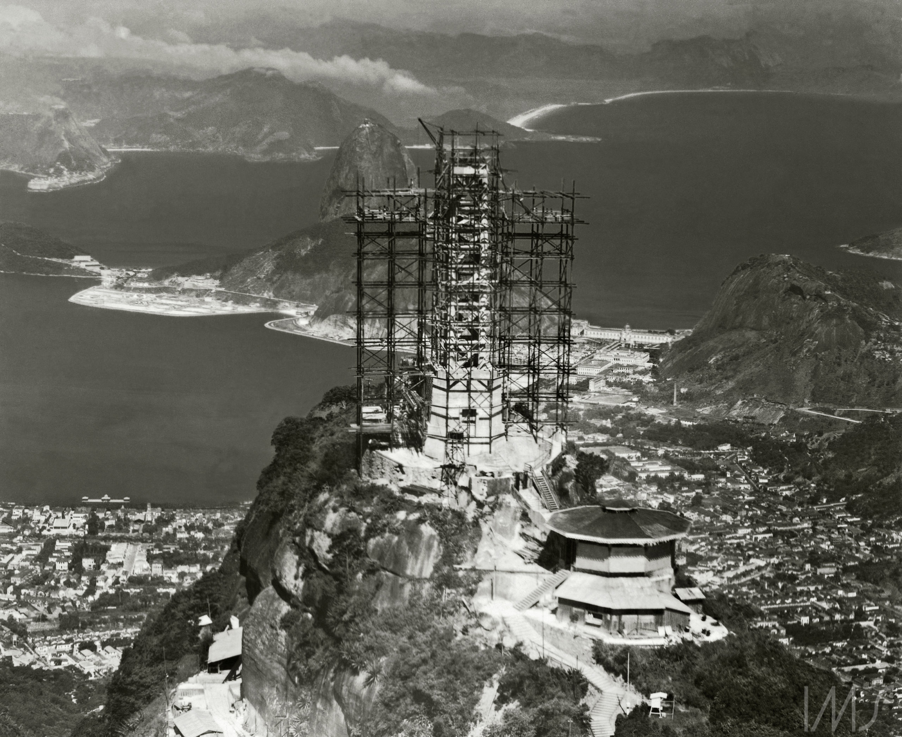
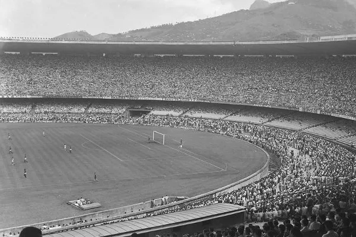
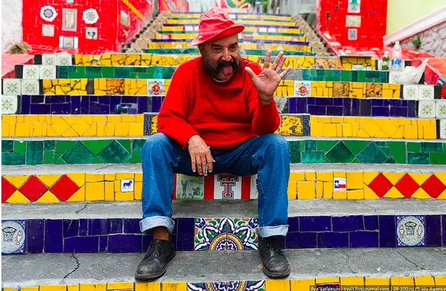
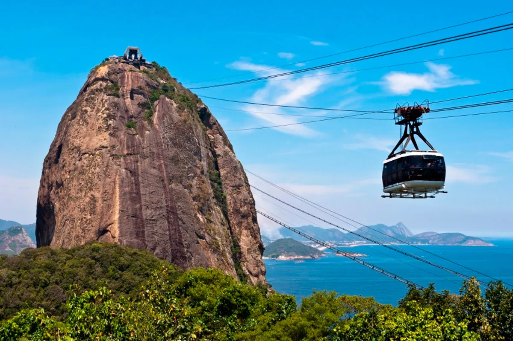
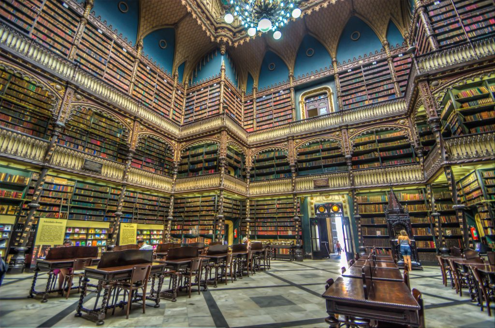

Bem Vindos
Localizado no Brasil,no estado do Rio de janeiro.A cidade do Rio de Janeiro é conhecido como a cidade maravilhosa.É uma das cidades mais bonitas para conhecer.
O município é classificado como um Patrimônio Cultural da Humanidade pela Organização das Nações Unidas para a Educação, a Ciência e a Cultura (Unesco).
História
A cidade do Rio de Janeiro foi a capital do Brasil durante os anos de 1763 a 1960.Fundada pelo militar português Estácio de Sá. Encontrada pela primeira vez durante uma expediição feita por Gaspar de Lemos,no dia 1 de janeiro de 1502,que acreditou que chegou sobre um grande rio,logo veio o nome da cidade Rio de Janeiro. O crescimento da cidade se deu devido aos portos.Com o seu crescimento se tonou centro intelectual e cultural do país,posto que se mantem até hoje.
Foi oficialmente fundada em 1565,após uma disputa entre portugueses e franceses pela região.
Após a chegada da corte portuguesa,o município ganhou diversas áreas que são importantes até hoje e viraram principais pontos turísticos da cidade como por exemplo:Jardim Botânico,Biblioteca Nacional entre outros.Após a proclamação da república,em 1889 perdeu parte da sua grande influência política,e após o avanço da industralização,perdeu o posto para São Paulo,porém a cidade é o principal destino turístico do país.
No ano de 2016,a cidade foi sede dos Jogos Olímpicos e Jogos Paralímpicos.Em 2024,sediou a COP20(Conferências das Partes),a cidade recebeu vários membros internacionais.
Pontos turísticos
O Cristo Redentor foi inaugurado em 1931,é um dos pontos turísticos mais famosos e visitado da cidade do Rio de janeiro. Criado pelos desenhista Heitor da Silva Costa,O pintor Carlos Oswald e o escultor Maximiliam Paul Landowsky.Possui 38 metros de altura. Foi inaugurado no dia 12 de outubro de 1931 e contou com a presença de pessoas de várias partes do mundo.

⏰O horario de funcionamento: 08:00 - 19:00
💲É cobrado uma taxa de entrada.
É um dos estádios mais conhecidos do mundo.Foi inaugurado no dia 16 de junho de 1950,com o nome de Estádio Mendes de Moraes ou Estádio Municipal de Derby. Foi sede da copa do mundo de 1950,onde ocorreu a final entre Brasil e Uruguai onde o Brasil foi derrotado por 2x1, episódio conhecido como o famoso Maracanazo.

Após a morte do jornalista esportivo,aconteceu a mudança para o nome do estádio de Estádio Jornalista Mário Filho,devido a sua luta e influência para criação do estádio no local.
⏰ Horário de funcionamento: Entre no site e agenda o horario pode alterar devidos aos jogos.
💲É cobrado uma taxa de entrada.
Você pode visitar no site: Site Maracanã
Localizada nos bairro da Lapa e Santa Teresa.A escadaria possui cerca de 215 degraus,feita pelo artista plástico chileno Jorge Selarón que cansado do péssimo estado resolver trazer sozinho mais cor e alegria para escadaria.

Com isso,ele trouxe a Lapa novamente na busca de pontos turísticos.
Tombado como patrimônio da cidade de Rio de Janeiro,O Parque Lage foi um engenho de açúcar no período do Brasil colonial.
A Entrada é Gratuita
⏰ Horário de funcionamento: 09:00 - 17:00

Famosa praia da cidade.
Cartão-postal da cidade,possui um teleférico.

⏰ Horário de funcionamento: 08:30 - 20:30
Último embarque às 19:00
💲É cobrado uma taxa de entrada.
Jardim mais antigo da América Latina em atividade.
💲É cobrado uma taxa de entrada.
Você pode visitar no site:Jardim Botânico
Fundada após a chegada da familia real portuguesa. é responsável por preservar, guardar, divulgar e captar a produção intelectual do país.Considerada pela UNESCO uma das dez maiores bibliotecas nacionais do mundo,sendo a maior da América Latina Criada para substiruir a biblioteca real,após uj incêndio após um terremoto em Lisboa
Você pode vistar gratuitamente.

⏰ Horário de funcionamento: Segunda a sexta - 11:00/12:00/14:00/15:00/16:00
Você pode visitar no site: Biblioteca Nacional
Ao visitar a cidade,lembre-se de conhecer o theatro municipal,ao lado da Biblioteca Nacional,foi inaugurado em 1909 e é uma das mais belas contruções da cidade.Recebendo até grande nomes de artistas internacionais
É necessário participar de uma visita guiada para entrar.Não é possível visitar sem a presença de um guia.
💲É cobrado uma taxa.
Você pode visitar no site: Theatro Municipal
Ao visitar uma cidade você não pode deixar de conhecer os seus museus.
O museu do amanhã esta localizado na Praça Mauá, na zona portuária.Ele conta com uma programação diversa para pessoas de todas as idades.
⏰O horario de funcionamento: Terça - Domingo :10:00 - 18:00. Sendo a última entrada às 17h
💲É cobrado uma taxa de entrada.Exceto na Terça que é gratuito
Você pode visitar no site: Museu do Amanhã
Restaurantes e Hoteis
Restaurantes
Famoso no Rio de Janeiro,foi fundada em 1894.Principal patrimônio cultural e artístico da cidade.
📍Rua Gonçalves Dias, 32- Centro - Rio de Janeiro - RJ
Você pode visitar no site: Confeitaria Colombo
Imagina comer num casarão antigo,com alimentos ligados a elementos tropicais orgânicos e sustentáveis.Esse restaurante funde a culinária brasileira com a internacional.Comer aqui leva o contato com a natureza.
📍Rua Aprazível, 62 -Santa Teresa - Rio de Janeiro - RJ
Você pode visitar no site: Restaurante Aprazível
Cozinha brasileira de vanguarda, feita no fogo.O restaurante possui duas estrelas Michelin.
📍Av. Gen. San Martin, 889 - Leblon, Rio de Janeiro - RJ
Você pode visitar no site: Restaurante Oro
Hoteis
Famoso hotel luxuoso de cinco estrelas,localizado em frente a praia de Copacapana,um dos pontos turísticos mais famosos da cidade.
📍Av. Atlântica, 1702 - Copacabana, Rio de Janeiro - RJ
Localizado na Lapa.Perto de diversos centros comerciais,lazer e cultura.
📍Av. Gomes Freire, 530 - Lapa, Rio de Janeiro - RJ
Possui vários hoteis pela cidade do Rio de Janeiro.
📍R. Paulino Fernandes, 39 - Botafogo, Rio de Janeiro - RJ
📍Praça Joia Valansi, 24 - Botafogo, Rio de Janeiro - RJ
📍R. Silva Jardim, 32 - Torre I, Rio de Janeiro - RJ
📍R. Constante Ramos, 96 - Copacabana, Rio de Janeiro - RJ
📍Av. Prof. Pereira Reis, 49 - Santo Cristo, Rio de Janeiro - RJ
📍Av. Mal. Câmara, 280 - Centro, Rio de Janeiro - RJ
O Mirante do Arvrão é um hotel, bar e restaurante, localizado no topo da Favela do Vidigal,possui uma das vistas mais bonitas da cidade.
📍R. Armando Almeida Lima, 8 - Vidigal, Rio de Janeiro - RJ